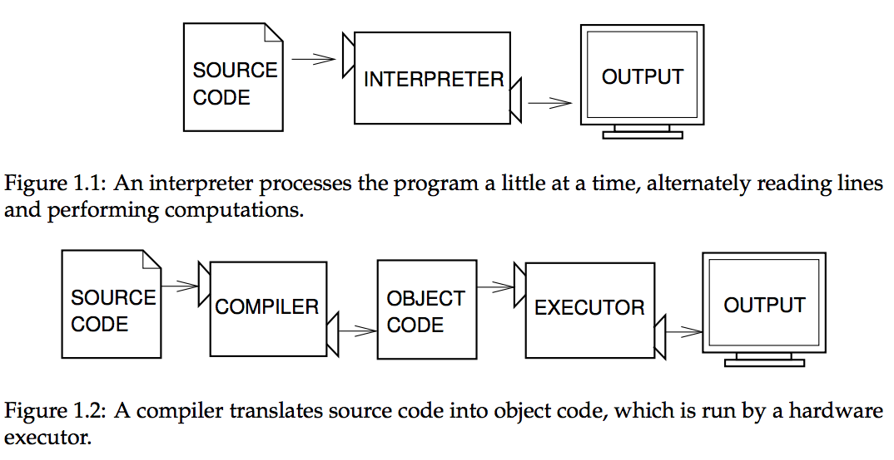
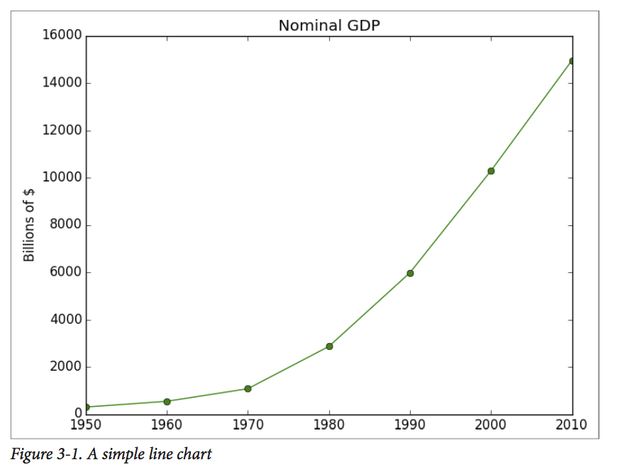
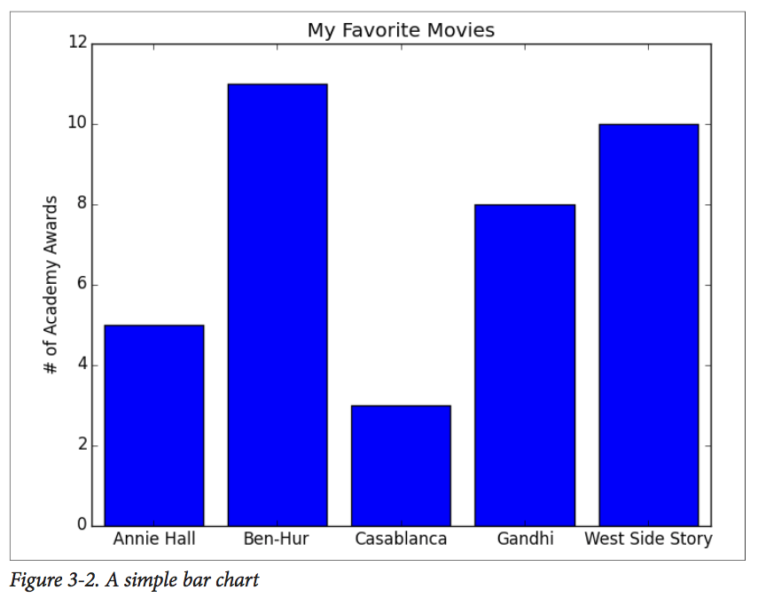
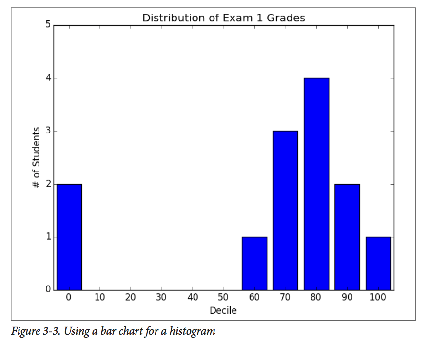
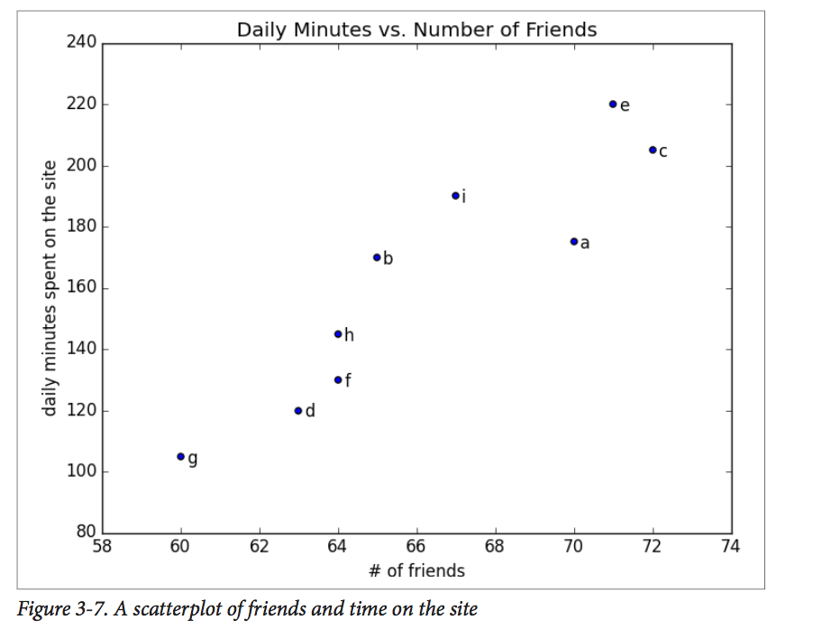

class: center, middle # A Crash Course in Python _People are still crazy about Python after twenty-five years, which I find hard to believe_ - Michael Palin <br> by Titipat Achakulvisut, reference from Data Science from Scratch by Joel Grus --- ## Overview  Python is considered an interpreted language (just as Matlab) --- ## Getting Python Download [Anaconda](https://www.continuum.io/downloads) distribution (with Python 3.5). You can also use Python 2.7. There are only minor syntax differences between 2.7 and 3.5. (Anaconda comes with `pip`, a Python package manager already). We are going to do hands-on coding in Jupyter notebook (previously called IPython notebook). Run the following in terminal to start Jupyter notebook at port 8888 (the new notebook will be in port 8889 etc. etc.). ```bash jupyter notebook ``` --- ### Python built-in data types here are some built-in data types in Python. We'll go more in details as example - **Strings**, `sample = "hello, world!"`, `sample = 'hello there'` - **Lists**, `[]` or `list()` is an empty list. `[1, 2, 3]`, `range(0, 10)`, `range(10)` - **Tuples**, `(1, 2)`, `enumerate([8, 6, 12])` - **Dictionaries**, `d = dict()`, `d = {}`, `grades = {'titipat': 99, 'konrad': 76}` - **Sets**, `s = set()`, `s.add(1)`, `set([1, 1, 2, 2, 3, 5])` - **Truthiness**, `x = None` >> `print(x == None)`, `print(x is None)`, `all()`, `any()` We can also cast types e.g. `str(1)`, `set([1, 1, 2, 2, 3])`. One more thing to note is that Python is zero indexed, everything starts with 0 not 1 like in Matlab. --- ## Whitespace Formatting Many languages use `{}` or `()`, Python uses indentation (4-spaces). ```python for i in [1, 2, 3 ,4 ,5]: print(i) for j in [1, 2, 3, 4, 5]: print(j) print(i + j) print(i) print("done looping") ``` --- ## Modules Certain features of Python are not loaded by default. - `import os` - `import re` - `import numpy as np` - `import pandas as pd` - `from collections import defaultdict, Counter` - `import matplotlib.pyplot as plt` After this type of `import`, you can access those functions by prefixing them with says `np.sum(...)`, `re.complie(...)` --- ## Functions In Python, we define function using `def`, ```python def square_plus(x): """Square the number and plus by one""" return x**2 + 1 y = square_plus(3) ``` We can also add default input in it. ```python def my_print(message="default message"): print(message) ``` --- ## Exceptions When something goes wrong, Python raises an _exception_. You can handle that using `try` and `except` ```python try: print 0 / 0 except: print "cannot divide by zero" ``` --- ## Randomness As a scientist or data scientist, we will frequently need to generate random number. We can do it using `random` module. ```python import random lottery_number = list(range(60)) random.sample(lottery_number, 6) # pick 6 numbers ``` ```python random.choice(['Alice', 'Bob', 'Charlie']) # randomly pick element from a list random.randrange(3, 6) # choose randomly from range(3,6) ``` --- ## Visualizing Data: matplotlib To _explore_ data and to _communicate_ data. We'll be using `matplotlib.pyplot` module ```python import matplotlib.pyplot as plt years = [1950, 1960, 1970, 1980, 1990, 2000, 2010] gdp = [300.2, 543.3, 1075.9, 2862.5, 5979.6, 10289.7, 14958.3] plt.plot(years, gdp, color='green', marker='o', linestyle='solid') plt.title("Nominal GDP") plt.xlabel("Year") plt.ylabel("Billions of $") plt.show() ```  --- ## bar chart ```python movies = ["Annie Hall", "Ben-Hur", "Casablanca", "Gandhi", "West Side Story"] num_oscars = [5, 11, 3, 8, 10] xs = [i + 0.1 for i, _ in enumerate(movies)] plt.bar(xs, num_oscars) plt.ylabel("# of Academy Awards") plt.title("My Favorite Movies") # label x-axis with movie names at bar centers plt.xticks([i + 0.5 for i, _ in enumerate(movies)], movies) plt.show() ```  --- ## bar chart for histogram ```python grades = [83,95,91,87,70,0,85,82,100,67,73,77,0] decile = lambda grade: grade // 10 * 10 histogram = Counter(decile(grade) for grade in grades) plt.bar([x - 4 for x in histogram.keys()], histogram.values(), 8) plt.axis([-5, 105, 0, 5]) plt.xticks([10 * i for i in range(11)]) plt.xlabel("Decile") plt.ylabel("# of Students") plt.title("Distribution of Exam 1 Grades") plt.show() ```  --- ## scatter plot ```python friends = [ 70, 65, 72, 63, 71, 64, 60, 64, 67] minutes = [175, 170, 205, 120, 220, 130, 105, 145, 190] labels = ['a', 'b', 'c', 'd', 'e', 'f', 'g', 'h', 'i'] plt.scatter(friends, minutes) for label, friend_count, minute_count in zip(labels, friends, minutes): plt.annotate(label, xy=(friend_count, minute_count), # put the label with its point xytext=(5, -5), # but slightly offset textcoords='offset points') plt.title("Daily Minutes vs. Number of Friends") ```  --- ## Statistics using list try to implement easy statistic ```python def mean(x): return sum(x) / len(x) ``` ```python def median(v): n = len(v) sorted_v = sorted(v) midpoint = n // 2 if n % 2 == 1: return sorted_v[midpoint] else: return (sorted_v[midpoint - 1] + sorted_v[midpoint]) / 2 ``` --- ## Statistics using list (cont.) ```python def quantile(x, p): p_index = int(p * len(x)) # e.g. 0.10, 0.25 return sorted(x)[p_index] ``` ```python def mode(x): counts = Counter(x) max_count = max(counts.values()) return [x_i for x_i, count in counts.iteritems() if count == max_count] ``` --- ## numpy `numpy` is the core library for scientific computing in Python. It provides a high-performance multidimensional array object, and tools for working with these arrays. (ref: [cs231n](http://cs231n.github.io/python-numpy-tutorial/)). You should go through [numpy for Matlab users](http://scipy.github.io/old-wiki/pages/NumPy_for_Matlab_Users) in order to ```python import numpy as np a = np.array([1, 2, 3]) # Create a rank 1 array print(type(a)) # Prints "<type 'numpy.ndarray'>" print(a.shape) # Prints "(3,)" print(a[0], a[1], a[2]) # Prints "1 2 3" a[0] = 5 # Change an element of the array print(a) # Prints "[5, 2, 3]" b = np.array([[1,2,3],[4,5,6]]) # Create a rank 2 array print(b.shape) # Prints "(2, 3)" print b[0, 0], b[0, 1], b[1, 0] # Prints "1 2 4" ``` --- ## numpy ```python import numpy as np a = np.zeros((2,2)) # Create an array of all zeros print a # Prints "[[ 0. 0.] # [ 0. 0.]]" b = np.ones((1,2)) # Create an array of all ones print(b) # Prints "[[ 1. 1.]]" c = np.full((2,2), 7) # Create a constant array print(c) # Prints "[[ 7. 7.] # [ 7. 7.]]" d = np.eye(2) # Create a 2x2 identity matrix print(d) # Prints "[[ 1. 0.] # [ 0. 1.]]" e = np.random.random((2,2)) # Create an array filled with random values print(e) ``` --- ## numpy ```python x = np.array([1, 2]) # Let numpy choose the datatype print(x.dtype) # Prints "int64" x = np.array([1.0, 2.0]) # Let numpy choose the datatype print(x.dtype) # Prints "float64" x = np.array([1, 2], dtype=np.int64) # Force a particular datatype print(x.dtype) # Prints "int64" ``` ```python x = np.array([[1,2],[3,4]], dtype=np.float64) y = np.array([[5,6],[7,8]], dtype=np.float64) ``` ```python x + y np.add(x, y) x - y np.subtract(x, y) x * y np.multiply(x, y) x / y np.divide(x, y) np.sqrt(x) ``` --- ## numpy ```python x = np.array([[1,2],[3,4]]) y = np.array([[5,6],[7,8]]) v = np.array([9,10]) w = np.array([11, 12]) ``` ```python v.dot(w) # vector product np.dot(v, w) x.dot(v) # matrix product np.dot(x, v) ``` ```python x = np.array([[1,2],[3,4]]) print np.sum(x) # Compute sum of all elements; prints "10" print np.sum(x, axis=0) # Compute sum of each column; prints "[4 6]" print np.sum(x, axis=1) # Compute sum of each row; prints "[3 7]" ``` --- ## numpy transpose matrix and vector ```python x = np.array([[1,2], [3,4]]) print(x) print(x.T) ``` but transpose 1-d array will give 1-d array still. ```python v = np.array([1,2,3]) print(v.T) v = np.atleast_2d(v).T # do something like this instead ``` This is `repmat` in Python ```python np.tile(v, (4, 1)) ``` --- ## numpy Broadcasting is a powerful mechanism that allows numpy to work with arrays of different shapes when performing arithmetic operations. ```python import numpy as np # We will add the vector v to each row of the matrix x, # storing the result in the matrix y x = np.array([[1,2,3], [4,5,6], [7,8,9], [10, 11, 12]]) v = np.array([1, 0, 1]) y = x + v # Add v to each row of x using broadcasting ``` --- ## numpy ```python from numpy import linalg linalg.norm([1, 1, 1]) linalg.inv(A) # inverse of square matrix A linalg.pinv(A) # pseudo-inverse of matrix A linalg.solve(A, b) # if a is square, this is solution of A * x = b for x linalg.lstsq(A, b) # otherwise D, V = linalg.eig(A) # eigenvalues and eigenvectors of A U, S, Vh = linalg.svd(A), V = Vh.T # equivalent to [U,S,V] = svd(A) ```